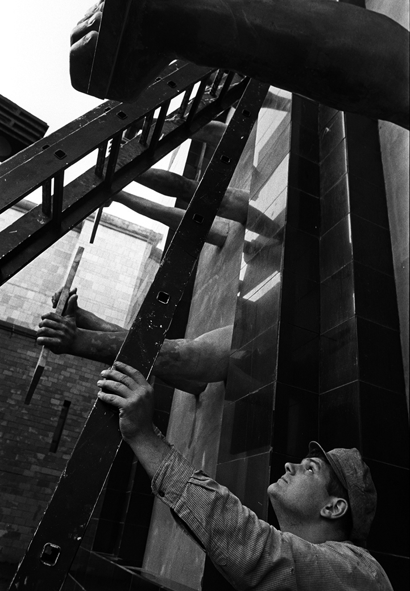
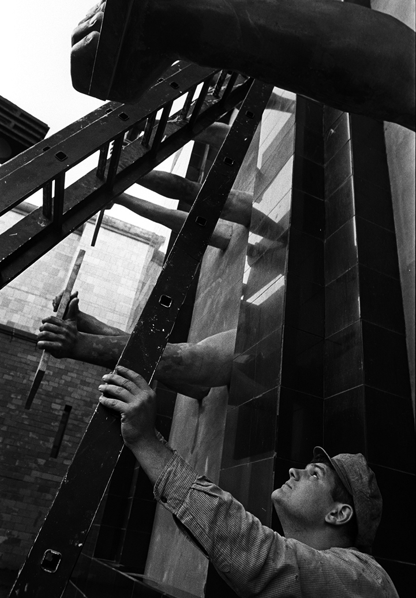
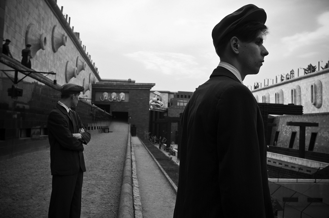
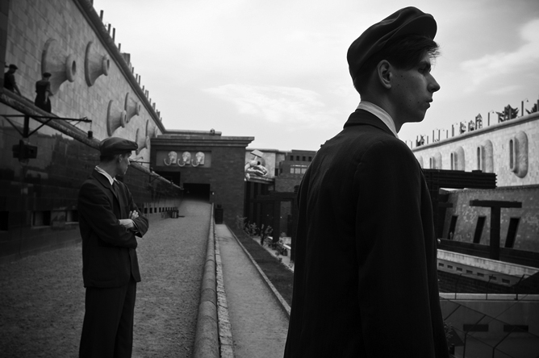

DAU — PRTCL. INS192–000167

DAU — PRTCL. INS192–
A protocol
for The Institute related docs.
A-B-LEFTSITE
DAU — TXT. HDK-0015
# Institute
Rooted in the top-secret, autonomous research facilities
built for Soviet scientists by Moscow, the DAU Institute became
an artistic and psychological playground
on a massive scale.
As in the closely-guarded sites that inspired it,
the researchers of the Institute explored fields ranging
from quantum physics, loop quantum gravity and string theory.
They also ventured outside scientific orthodoxy
to fields such as orgone energy, thought transference
and teleportation, movement through time and space,
psycho-artistic experimentation on the borders of human behaviour,
traditional and non-traditional practices and rituals —
Christian, Buddhist, Jewish and Shamanic —
applying scientific investigative principles
in each case.

 
 

DAU — PRTCL. INS192–0000636
— A
Construction, 1938
Institute
1
2
3
4
5
6
7

DAU — PRTCL. INS192 –0001229
Construction, 1938

DAU — PRTCL. INS192 –0001371
Construction, 1938
DAU — PRTCL. INS192 –0001400
Construction, 1938

DAU — PRTCL. INS192 –0001680
Left hand side road
to the Spatial Fluctuations
Research Lab


DAU — PRTCL. INS192 –0001982 # Institute
/ Detail

DAU — PRTCL. INS192 –0001887
Left hand side road
to the Spatial Fluctuations
Research Lab
DAU — PRTCL.
DAU — TXT.
INS192–0002120
HDK-0029, TERM:003
Starting in 2009, several hundred people
abandoned their normal lives for three years
travelling back in time to the
Soviet Union...
DAU — TXT.
to live and work
HDK-0030, TERM:0035
at the Institute
and subject themselves
to its demands.
They came from many backgrounds —
street-cleaners, global artists,
philosophers, bar-workers,
Nobel Prize winners,
state agents, scientific,
spiritual and political figures
cut themselves off
from their societies
and lived and worked together.
They created a new and self-contained
world that worked to its own
strict rules, and it became their
daily reality.
DAU — PRTCL.
INS192–0002192
DAU — PRTCL. INS192–0002200
DAU — PRTCL. INS192–0002301

DAU — PRTCL. INS192 –0002842
DAU — PRTCL. INS192 –0002846
~1938-39


DAU — PRTCL. INS192 –0002848
~1938-39
DAU — PRTCL. INS192 –0004801
~1956
 
 DAU — PRTCL. INS192 –0003500
~1942
DAU — PRTCL. INS192 –0004847
~1956

DAU — PRTCL. INS192 –0003521
~1941
DAU — PRTCL. INS192 –0004851
~1956
DAU — PRTCL. INS192 –0003580
~1942
DAU — PRTCL. INS192 –0004847
A—

NO.
2004H
Alexander Vilenkin
Member of the International Scientific
Conference at the Institute
Insitute years: 1956
DAU — PRTCL. INS192 –0004849
DAU — PRTCL. INS192 –0004849
NO. 0001B


DAU — PRTCL. INS192
Institute years:
18 94
19 38
48
52
Awards and Honours:
NO. 0010A
Anatoly Krupitsa
Director of the Institute
1938-1952
Born in Kronstadt, Russia.
Founded the Institute as place
for scientific research and development.
Made the Director of the Institute
by Soviet authorities.
Granted permission by the authorities
to begin work on a nuclear project.
Forced to step down as Director of the Institute.
Full Member of AS of the USSR

DAU — PRTCL. INS192 –0000203

DAU — PRTCL. INS192 –0000203

0000208
DAU — PRTCL.
DAU — TXT.
INS192
HDK-0627, TERM:000B
Laboratory Journal
Biochemistry Experiments
Started:
15.10.1952
Ended:
DAU — PRTCL. INS192
DAU — TXT. HDK-0627, TERM:001C
Электростимуляция мозга
Лозунги работы:
Общество, в котором каждый,
кто отклоняется от нормы, будет подвергнут
хирургическому оболваниванию.
«Технологический тоталитаризм»
Мозговой контроль = Физический контроль.
Бионический эксперимент.
Насилие с мозгом или спокойствие без мозга.
Физический контроль над разумом:
путь к психоцивилизованному обществу.
Идеальный человек — менее жестокий
и более счастливый.
Ваше электричество, доктор,
сильнее моих желаний.

DAU —
PRTCL. INS192 –0000400
RC—
Electro stimulation
and stereotactics operation
of a rat brain
DAU — TXT.
Stereotactics:
HDK-0627, TERM:002X
1. rack; 2. X-axis carriage moving device;
3. Y-axis mocrometric screw of the stereotactics head moving device;
4. stereotactics head;
5. X-axis mocrometric screw
of the stereotactics head moving device;
6. electrodes grip;
7. angular carriage moving device;
8. the bed; 9. stereotactics head grip; 10. head grip rack
DAU — PRTCL. INS192 –0000203
DAU — PRTCL. INS192 –0004847
LAB 2

DAU — PRTCL. INS192 –0003521
LAB 2
DAU — PRTCL. INS192 –0004851
LAB 1
DAU — PRTCL. INS192 –0003580
LAB 2
DAU — PRTCL. INS192
DAU — TXT. HDK-0627, TERM:001C
| The Institute Administration
| Anatoly Krupitsa | Director of the Institute |
| Nina Kovaleva | Director's PA |
| Zoya Popovava | Director's Science PA |
| Alexander Serduk | Director's Administrative Deputy |
| Vladimir Ermolenko | Director's Safety and Regime Deputy |
| Marina Antsibor | Director's Safety and Regime Deputy PA |
| Anatoly Sidko | HR Director |
| Alexey Trifonov | Director of the Institute Operations |
| Pavel Gordienko | Director of the Institute Special Dept. |
| Julia Sitnikova | Director of the Institute |
| | Internal Security Services |
| Viktor Mamonov | The Insitute Party Representative |
| Viktoria Morozova | The Insitute Party Representative PA |
| The Institute Scientific Crew
| DAU | Director of the Theoretical Dept. |
| Alexey Blinonv | Director of the Experimental Dept. |
| Andrey Losev | Director of the Quantum Theory Lab |
| Nikita Nekrasov | Team Lead |
| Feodor Safronov | Director of the Acoustic Lab |
| Jury Kot | Director of the Biochemistry Lab |
| Alexander Zakutsky | Director of the Device/Construction |
| | of the Experimental Dept. |
| Roman Shurinov | Director of the Energy Research Lab |
| Daria Berhitskaya | Biochemistry Lab Team Lead |
| The Institute Labs Crew
| Irina Bespalova | Biochemistry Lab Assistant |
| Alena Butirkina | Energy Research Lab Assistant |
DAU — PRTCL.
DAU — TXT.
INS192
HDK-0627, TERM:000B
Laboratory Journal
Energy Research Experiments
Started:
15.10.1952
Ended:
DAU — PRTCL. INS192
DAU — TXT. HDK-0627, TERM:001C
Orgone Accumulator
Harnessing the power of orgone energy
for the development of super-human abilities
in military personnel.
Establishing the existence of the elusive
energy substance orgone, as postulated
by Wilhelm Reich, by building a device according
to his original plans.
The structure is built using alternating layers
of organic and non-organic material, in order
to contain and amplify orgone energy
for further study.
It is thus possible to investigate
its potential for increasing the capacities
and endurance of workers in the fields of war,
intelligence and industry.
AFR
902DY1
Formative Results
of the ISC at the Institute
DAU — PRTCL. FDI9
DRFT. 002H–98–47–KTL7
Orgone Energy
EXP — DX178 Detail
PRTTP . TSTS
21.05.1956 | POS | NEG BLD
DAU — PRTCL. INS192 –0004851
LAB: Energy Research/Quantum Theory
DAU — PRTCL. INS192 –0003580
LAB 2
DAU — PRTCL. INS192 –0004851
LAB: Energy Research/Quantum Theory
DAU — PRTCL. INS192 –0003580
LAB 2
DAU — PRTCL. INS192 –0003580
LAB 2
DAU — PRTCL. INS192
DAU — TXT. HDK-0627, TERM:000B
Laboratory Journal
Energy Research Experiments
Orgone Accumulator
| Param., Num | Breakthrough | Charge Time | Volume of Liquid Out |
| | Quantity | | |
| | 35 | 2m 57s | 1,5 |
| | 36 | 3m 03s | |
| | 37 | 3m 09s | |
| | 38 | 3m 15s | |
| | 39 | 3m 21s | |
| | 40 | 3m 29s | |
| | 41 | 3m 37s | |
| | 42 | 3m 44s | |
| | 44 | 4m 01s | |
| | 45 | 4m 09s | |
| | 46 | 4m 16s | |
DAU — PRTCL. INS192 –0004851
LAB: Energy Research/Quantum Theory
DAU — PRTCL. INS192 –0003580
LAB 2
DAU — PRTCL. INS192 –0003580
LAB 2
DAU — PRTCL. INS192 NO. 0125F
Alexey Trifonov
Chief of the General Department (1952-1960)
Head of the Institute (1960-1966)
Institute years: 1942-1968
19 11 Born in Saint Petersburg
Father was a professor at Saint Petersburg University.
22 Moved with father to Czechoslovakia.
27 Enrolled in Russian Juridical Department
at Charles University in Prague.
31 Joined the KGB.
Over next decade, provided USSR leaders with state
secrets from England, Germany, Italy, Finland, France.
Stole a number of new technologies and weapon samples
for the USSR.
34 Defend his thesis — 'The main problems of law in light
of historical and dialectical materialism'
at Charles University. Obtained degree to become
a Doctor of Law.
Studied at the Academy of Fine Arts in Paris
and the Art Academy in Berlin.
37 Ended affiliation with KGB.
DAU — PRTCL. INS192 –0000203
19 38 Worked at Scientific Research Physiological
Institute of Leningrad University.
40 Became a member of the Writers' Union USSR.
41 Joined Bolshevik Party.
Defended doctoral a thesis on 'Transformation of anthropogenic
energies and the dominant principle'.
42- Began work at the Institute.
-51 Served as the administrative head at Dau's secret laboratory
in Novosibirsk.
52 Became Chief of the General Department at the Institute;
Conducted scientific research for Dau's secret project
in Molotov (Perm).
60- Became Director of the Institute
-66 until his voluntary resignation.
Awards and Honours:
Lenin Prize,
Order of the Red Banner, Badge of Honour,
Stalin Prize, Medals 'For the Defence of Leningrad'
and 'For Work Excellence'
Private Life: Two children, Valera and Yelena
DAU — PRTCL. INS192
DAU — TXT. HDK-0627, TERM:001C
Laboratory Journal
Thought Transfer Experiments
29.10.1968
DAU — PRTCL. INS192 –0004847
LAB: Acoustic
DAU — PRTCL. INS192 –0003521
LAB: Behavioral

DAU — PRTCL. INS192 –0003580
LAB: Behavioral
DAU — PRTCL. INS192 –0003580
LAB: Behavioral
DAU — PRTCL. INS192 –0003580
LAB: Behavioral
DAU — PRTCL. INS192 –0003580
LAB: Behavioral
DAU — PRTCL. INS192 –0003580
LAB: Behavioral
DAU — PRTCL. INS192 –0003580
LAB: Behavioral
DAU — PRTCL. INS192 –0003580
LAB: Behavioral
DAU — PRTCL. INS192
DAU — TXT. HDK-0627, TERM:001C
Laboratory Journal
Thought Transfer Experiments
29.10.1968
Ход эксперимента
1: Максим Марцинкевич, 27 лет.
Взятие электрокардиограммы
Соня накладывает электроды.
Испытуемый спокоен, пока ещё шутит.
Закрепили электроды на правой руке,
левой руке, правой ноге и левой ноге.
Началась электрокардиограмма.
Отпал электрод.
Поехали.
Ждем разогрева аппарата.
Чего не пошла.
Я получила ЭКГ.
Испытуемый интересуется
придётся ли ему ещё раз раздеваться.
Продолжение в стеклянном кубе
испытуемого помещают в куб.
Испытуемому на голову надевается шлем
для снятия ЭКГ.
Он все ещё продолжает выпендриваться,
с этим ничего пока не поделаешь.
Забирают лестницу. Пошло снятие ЭКГ.Снятие ЭКГ.
Испытуемый, выходит из дальнего куба.
Погружение во второй куб.
Затем испытуемый.
На него надевает д-чики. Затем шлем.
К сожалению, испытуемые — полные дебилы.
Впрочем, такими они и должны быть.
DAU — PRTCL. INS192 –0004847
LAB: Acoustic
DAU — PRTCL. INS192 –0003521
LAB: Behavioral
DAU — PRTCL. INS192 –0003580
LAB: Behavioral

DAU — PRTCL. INS192 –0003580
LAB: Behavioral
DAU — PRTCL. INS192 –0003580
LAB: Behavioral
DAU — PRTCL. INS192
DAU — TXT. HDK-0627, TERM:001C
Laboratory Journal
Thought Transfer Experiments
29.10.1968
Ход эксперимента
1
17 сек.
28 сек.
1 подход — 35 сек.
Воздействие на головной мозг пошло.
2 подход — 33 сек.
3 подход — 45 сек.
4.25
9 14 15 9 12 13 / 82.
Погружение в куб второго испытуемого снятие ЭЭГ.
Испытуемый спокоен, имеет ровное дыхание,
руки расслаблены и синие штаны.
Взятие ЭЭГ пошло.
Пошло ЭЭГ.
Похоже что энцефалограф сломался.
Ждем его наладки.
Номеру А опять грозит физическая сл.
3: Касич Алексей, 26 лет
Погружение третьего испытуемого в первый куб.
4: Чуенков Андрей, 24 года
DAU — PRTCL. INS192 –0004847
LAB: Acoustic
DAU — PRTCL. INS192 –0003521
LAB: Behavioral
DAU — PRTCL. INS192
DAU — TXT. HDK-0627, TERM:001C
Laboratory Journal
Thought Transfer Experiments
29.10.1968
Ход эксперимента
Третий испытуемый отправиться в первый куб.
Второй испытуемый сейчас приступит
ко второй серии экспериментов.
19 сек.
5: Долганов Евгений, 29 лет
И последний испытуемый отправляется на ЭКГ.
Снятие энцефалограммы у пятого испытуемого.
Процесс пошел.
Испытуемый спокоен
Второй раз 2
Начинается снятие ЭЭГ 2 у испытуемого 1
Испытуемый спокоен, но явно устал.
Что с ним делать с таким уебком —
совершенно непонятно.
Видос конечно у всего
DAU — PRTCL. INS192 –0003521
LAB: Behavioral
DAU — PRTCL. INS192 –0003521
LAB: Behavioral
DAU — PRTCL. INS192 –0003521
LAB: Behavioral
DAU — PRTCL. INS192 –0004847
~1956

DAU — PRTCL. INS192 –0003521
~1941
DAU — PRTCL. INS192 –0004851
~1956
DAU — PRTCL. INS192 –0003580
~1942
DAU — PRTCL. INS192 –0004851
~1956

DAU — PRTCL. INS192 –0003580
~1942
DAU — PRTCL. INS192 –0004851
~1956
DAU — PRTCL. INS192 –0003580
~1942
DAU — PRTCL. INS192 –0004851
~1956
DAU — PRTCL. INS192 –0003580
~1942
DAU — PRTCL. INS192
DAU — TXT. HDK-0627, TERM:001C
Laboratory Journal
Primate Experiments
29.10.1968
DAU — PRTCL. INS192 –0004847
LAB: Acoustic

DAU — PRTCL. INS192 –0003521
LAB: Behavioral
DAU — PRTCL. INS192 –0000203
0000208
0000208
DAU — PRTCL. INS192 –0003521
LAB: Behavioral
DAU — PRTCL. INS192 –0003521
LAB: Behavioral
DAU — PRTCL. INS192
DAU — TXT. HDK-0627, TERM:001C
Laboratory Journal
Thought Transfer Experiments
29.10.1968
Ход эксперимента
Женщина повторяет движения обезьяны, по зеркально соотв.
Они двигаются в разные стороны.
Женщине и обезьяне поход. в стеклянных кубах помещены рядом.
Обезьяна обосралась, а женщина – нет.
И это – факт.
В кубах находятся предмет:
— простыня,
— шар,
— резиновая перчатка,
— маска,
— шар,
— яблоки, груши (2 шт.)
Обезьяна выпендривается.
Какова продолжительность эксперимента уже нихрена не ясно
Обезьяна на женщину не реагирует вообще, несмотря на зеркальность
Б. Профессор, зачем она зеркальная?
П. Потому что она знает воссоздав зеркало.
Б. Так вы хотите эксперимент на женщине?
П. Да, но это больше эксперимент для женщины.
Потому что это очень нужная вещь, зеркало.
Мы поворачиваем в прошлое и заглядываем туда.
Цель – воссоздать картинку в конце
Н. Это — дейк. Она одета и не успел всего того что делает обезьяна.
П. Да, но это просто без побега. Эта картина,
она из модного мира, они не имеют к животным.
Б: Вы хотите что б она как вы вспоминала все из природы
П: Нет, просто можно поставить
зеркало между природой и культурой.
Д спросил можно ли это повторить как шоу.
Но П считает что это единоличный случай, такой эксперимент.
Профессура приняла к выводу что мы отвлекаем подопытных
Композитор Кортеко. (1930)
Обезьяне видимо не понравилась музыка
Реакция это на музыку или нет – непонятно, т.к.
Непонятно, если ли в боксе музыка.
В обоих боксах есть музыка
Девушка медленнее повторяла движения.
Они говорят о том, что может быть обезьяна хочет спрятаться.
Обезьяна легла и лежит.
Она устала
DAU — PRTCL. INS192 –0003521
LAB: Behavioral
П: Нет, думаю хватит.
Э: Т.К. мы отзеркаливаем это ведь большая часть коммуникаций.
П: Абсолютно, распознавание друг друга.
Вопрос о том, может ли быть шимпанзе предком человека.
Думает что это разные ветки, но предок может быть один.
Ритмичное движений и их
после она
она хочет выбраться.
Наглядной целью этого эксперимента была бы в фиксации движений а ещё,
снятия с них ЭЭГ, произведение за на ним движений хореографически,
У эксперимента
Изначально эксперимент должен был быть 2
суток, чтото девушка пила, ела и испражнялась там же.
Третьякова. Картина «Над вечным покоем»
Эксперимент подходит к концу
П Предлагает покинуть помещение всем
кто устал.
Эксперимент прекращается
Женщине подали стакан воды,
Теперь она выбирается из куба.
Обезьяна тоже выбралась из
Куба и целуется с дрессировщицей.
Обезьяна пьет воду.
Все в восторге я сейчас
вскроюсь
DAU — PRTCL. INS192 –0003580
LAB: Behavioral
DAU — PRTCL. INS192 –0000400 DAU — TXT.
RC—
Эксперимент с семянами Проведение
21.04.52 эксперимента
HDK-0627, TERM:002X
Начинается эксперимент с подготовки опытных образцов семян.
Определяются и задаются параметры проведения эксперимента
(в нашем случае это используемая для проращивания вода и условия).
Подготовленные образцы делятся согласно заданным условиям,
после чего часть образцов помещается в Пирамиду.
Несколько раз в сутки в контрольно — фиксированное время проводятся плановые осмотры
экспериментальных образцов.
Проведён осмотр зёрен в Пирамиде и под коробкой Оказалось, что в Пирамиде зёрна проросли
в 2 раза больше чем под коробкой, под которой зёрна только частично проросли.
В Пирамиде зёрна проросли хорошо. Ростки в Пирамиде заметно превышают те что в коробке.
DAU — PRTCL. INS192 –0003521
LAB: Behavioral
DAU — PRTCL. INS192 –0004851
LAB: Energy Research/Quantum Theory
DAU — PRTCL. INS192 –0003580
LAB 2
DAU — PRTCL. INS192 –0003580
LAB 2
DAU — PRTCL. INS192 –0003580
LAB 2

DAU — PRTCL. INS192 –0003580
LAB 2
DAU — PRTCL. INS192 –0000400
RC—
DAU — PRTCL. INS192 –0000400
RC—
DAU — PRTCL. INS192
DAU — TXT. HDK-0627, TERM:001C
Laboratory Journal
Babies Experiments
17.10.68
Ход эксперимента
Испытуемые: младенцы
Рук-ль эксперимента: Блинов А.Ю.
Длительность эксперимента: 1,5 – 2 ч.
Местонахождение: Большая
Два ребёнка имеют отклонение.
Один аутист, другой там ещё с синдромом Дауна. Бедняги.
Мы будем воздействовать на термноральные области и узнаем,
возможные и (???) и так далее.
В лаборатории жарко, мы со всех детей снимаем одеяла.
1) Мащенко Вадим – 4 мес. Здоров
Первый испытуемый
1) Снятие электрокардиограммы.
Испытуемый ведет себя относительно тихо,
заметно что ему комфортно в данных условиях.
Роман и Ал. Ник. Смачивает его запястья водой и прикрепляет электроды.
Испытуемый относительно спокоен. Ничто него не тревожит.
Этап первый – снятие ЭКГ.
Прикрепили электроды на грудь в область сердца.
Снятие электрокардиограммы. Данные получены.
2) Второй испытуемый – Таратуть Денис.
На втором испытуемом закрепляются электроды.
Закончилось взятие ЭКГ. Испытуемый очень нервозен. Не вышло.
DAU — PRTCL. INS192 –0000400
RC—
DAU — PRTCL. INS192 –0000400
RC—
DAU — PRTCL. INS192 –0000400
RC—
3) Кальнаш Пётр.
Испытуемый пора что успокоить, нервничает.
Сестра помогает снять ЭКГ, потому что иначе не выходит.
Процедура затягивается.
Взятие ЭКГ проходит успешно.
Но ребёнка приходится успокаивать.
4) Варвара, синдром дауна.
Ребенок очень нервозен, успокоить её не получается.
Приступают к взятию ЭКГ.
Ребёнок не успокаивается.
Возвращаемся к Таратуте
Денис Таратута, 2
Мальчик очень нервозен с трудом удается успокоить.
Он очень подвижен и не получается закрепить на нем электроды.
Мальчика (???)
Это Маченко Вадим.
В первом кубе находится Роман. Вадим абсолютно расслаблен.
Его раздевают и помещают на голову шлем бега.
Снимают абсолютно все в т.ч. и подгузник.
Сняли подгузник, закрепляют на его голове электроды.
Рома конечно тот ещё уебан.
DAU — PRTCL. INS192 –0000400
RC—
Совершенно непонятно насколько это объективно, но все…
В лаборатории совершенно убогий свет.
Доля мозга, кот. отвечает за мораль, она вос.
Конечно у некоторых отсутствует.
С третьей испытуемой бедняжкой вообще печаль.
Она очень сильно плачет. Я даже её боюсь. Это Варвара.
Если мы говорим о рабочем, это одна ситуация.
Если об влиянии, то дело в другом.
Маленьким детям вообще (???) поэтому они непосредственные + (???).
В тоб обратить серотонин.
Некоторые люди в вину наследственности это отключено.
Двадцать пятая область отвечает за депрессию.
Семгу, например, или даже креветочек, или омара какого-нибудь
кто знает.
Блинов, конечно, сам та ещё креветка.
Надо сказать, что мы все здесь (???) не креветок но что поделать.
То есть получается что практически ничего не получается.
Последний испытуемый – Койнам Пётр.
Никакой опасности мы детей не подвергаем.
Не было зарегистрировано не одного случая повреждения,
не было зарегистрировано.
Последнего испытуемого собираются заставить.
Джим все продолжает загружать свои телеги,
это просто пиздец какой-то.
Есть ощущения, что (???).
DAU — PRTCL. INS192 –0000400
RC—
Товарищ Гордиенко явно против.
Оригинальные всплески
Что поделать – всегда об одном и том же
И все это — ещё не конец.
Ничего из этого не похоже ни на что раньше.
Ну пиздец.
Плакали: Данилы Поляковы и Иваны Дали.
Это замечательно часть обученного,
которой я может быть даже не показалась.
Последнего испытуемого помещают обратно в клетку ну (???).